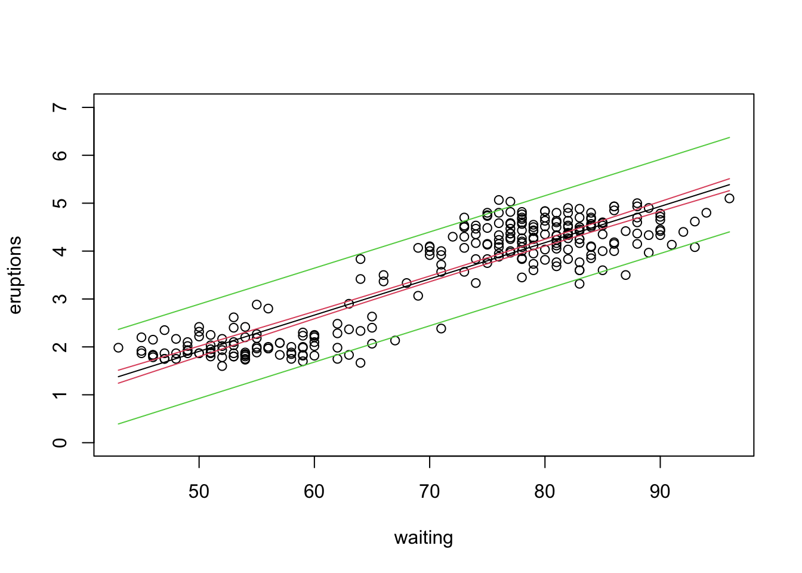

17 Week 9 Lab
There are 6 parts to this week's lab:
- Correlation tests using 'cor.test'
- Linear regression with 'lm'
- Weighted linear regression using 'lm'
- Robust regression with 'rlm'
- Bootstrapping standard errors for robust regression using 'boot'
- Type I vs. Type II regression using 'sma' package
We will need 4 packages for this week's lab, so we might as well load them all in now.
library(MASS)
library(car)## Loading required package: carDatalibrary(boot)##
## Attaching package: 'boot'## The following object is masked from 'package:car':
##
## logitlibrary(smatr)17.1 Correlation
We will first go over how to test for correlation between two variables. We will use a dataset of July mean temperatures at an Alaskan weather station (Prudhoe Bay) over a period of 12 years.
Temperature<-c(5.1,5.6,5.7,6.6,6.7)
Year<-c(1979,1982,1985,1988,1991)First we will plot the data to get a sense for whether the correlation coefficient is likely to be positive or negative.
plot(Year,Temperature,pch=16)We can test the correlation between Temperature and Year using the R function 'cor.test'
ans<-cor.test(Temperature,Year)
ans##
## Pearson's product-moment correlation
##
## data: Temperature and Year
## t = 6.4299, df = 3, p-value = 0.007626
## alternative hypothesis: true correlation is not equal to 0
## 95 percent confidence interval:
## 0.5625553 0.9978118
## sample estimates:
## cor
## 0.965581'cor' is the correlation coefficient - we see there is a strongly positive (and statistically significant) correlation between year and temperature.
Let's make sure we understand every part of this output.
Part 1: This is just spitting back what two variables are being correlated.
Part 2: t=6.4299 How do we get this? Remember:
\[ t_{s} = r\sqrt{\frac{n-2}{1-r^{2}}} \]
We can calculate this by pulling out various elements of the variable 'ans'.
names(ans)## [1] "statistic" "parameter" "p.value" "estimate" "null.value"
## [6] "alternative" "method" "data.name" "conf.int"r<-as.numeric(ans$estimate) #as.numeric supresses labels
df<-as.numeric(ans$parameter)
r*sqrt(df/(1-(r^2)))## [1] 6.429911This gives us the same as
ans$statistic## t
## 6.429911Part 3: Why is df=3? For a correlation coefficient, you have n-2 degrees of freedom - you lose one degree of freedom for the mean of each variable.
Part 4: How do we get p-value = 0.007626? First, lets start with a plot of the t-distribution with three d.o.f.
plot(seq(-7,7,0.01),dt(seq(-7,7,0.01),df=3),typ="l",col="purple",lwd=2)
abline(v=6.4299)We can ask P(t>6.4299)=1-P(t<6.4299) by
pt(6.4299,df=3,lower.tail=F)*2## [1] 0.007625665Why multiple by 2? Because we want a two-tailed test, so we want to consider correlations larger in magnitude that are either positive or negative.
Part 5: 95 percent confidence interval (0.5625553,0.9978118).
\[ z=\frac{1}{2}ln(\frac{1+r}{1-r})=arctanh(r) \]
z<-(1/2)*log((1+r)/(1-r))
z## [1] 2.022468\[ P(z-\frac{t_{[1-\alpha/2](\infty)}}{\sqrt{n-3}}\leq arctanh(\rho) \leq z+\frac{t_{[1-\alpha/2](\infty)}}{\sqrt{n-3}})=1-\alpha \]
\[ P(tanh(z-\frac{t_{[1-\alpha/2](\infty)}}{\sqrt{n-3}})\leq \rho \leq tanh(z+\frac{t_{[1-\alpha/2](\infty)}}{\sqrt{n-3}}))=1-\alpha \]
n<-5
LL.z<-z-(1/sqrt(n-3))*qnorm(0.975)
LL.r<-tanh(LL.z)
LL.r## [1] 0.5625553UL.z<-z+(1/sqrt(n-3))*qnorm(0.975)
UL.r<-tanh(UL.z)
UL.r## [1] 0.9978118Notice that I can extract the LL and the UL by taking the tanh of the limits for the transformed variable.
In class we discussed several different ways of testing for a correlation. We can see these by querying the help page for 'cor' and 'cor.test':
?cor.testNotice that under the method option there are three options. The "pearson" is the first (default). We can change the default by trying
cor.test(Temperature,Year, method="kendall")##
## Kendall's rank correlation tau
##
## data: Temperature and Year
## T = 10, p-value = 0.01667
## alternative hypothesis: true tau is not equal to 0
## sample estimates:
## tau
## 1Does it make sense why Kendall's tau=1.0?
17.2 Linear modelling
Linear modeling in R occurs primarily through two functions 'lm' and 'glm'. The first is reserved for linear regression in the form we have been discussing this week. The second function is for generalized linear models; we will discuss these in the next few weeks.
The syntax of 'lm' is straightforward. We will run through some examples using a dataset on Old Faithful eruptions. The dataset is built into the MASS library, so we just have to load it.
attach(faithful) #A rare exception to the rule of avoiding 'attach'
head(faithful)## eruptions waiting
## 1 3.600 79
## 2 1.800 54
## 3 3.333 74
## 4 2.283 62
## 5 4.533 85
## 6 2.883 55plot(waiting, eruptions,pch=16)
This dataset lists the times of an Old Faithful eruption as a function of the waiting time prior to the eruption.
We can see that as the waiting time increases, so does the length of the eruption. We can fit a linear regression model to this relationship using the R function 'lm'.
eruption.lm<-lm(eruptions~waiting)Model: y~x1
Meaning: y is explained by x1 only (intercept implicit)
Model: y~x1-1
Meaning: y is explained by x1 only (no intercept)
Model: y~x1+x2
Meaning: y is explained x1 and x2
Model: x1+x2+x1:x2
Meaning: y is explained by x1,x2 and also by the interaction between them
Model: y~x1*x2
Meaning: y is explained by x1,x2 and also by the interaction between them (this is an alternative way of writing the above)
We print out a summary of the linear regression results as follows:
summary(eruption.lm)##
## Call:
## lm(formula = eruptions ~ waiting)
##
## Residuals:
## Min 1Q Median 3Q Max
## -1.29917 -0.37689 0.03508 0.34909 1.19329
##
## Coefficients:
## Estimate Std. Error t value Pr(>|t|)
## (Intercept) -1.874016 0.160143 -11.70 <2e-16 ***
## waiting 0.075628 0.002219 34.09 <2e-16 ***
## ---
## Signif. codes: 0 '***' 0.001 '**' 0.01 '*' 0.05 '.' 0.1 ' ' 1
##
## Residual standard error: 0.4965 on 270 degrees of freedom
## Multiple R-squared: 0.8115, Adjusted R-squared: 0.8108
## F-statistic: 1162 on 1 and 270 DF, p-value: < 2.2e-16Question: In words, how would we interpret the coefficients for this model?
Make sure you understand all of this output!
We can check the output on the residuals using either the R function 'residuals' which takes in the lm object and spits out the residuals of the fit
quantile(residuals(eruption.lm),probs=c(0.0,0.25,0.5,0.75,1.0))## 0% 25% 50% 75% 100%
## -1.29917268 -0.37689320 0.03508321 0.34909412 1.19329194or by using the R function 'predict' (which calculates the predicted y value for each x value) and calculating the residuals ourselves:
residuals<-eruptions-predict(eruption.lm, data.frame(waiting))
# Note that predict wants a dataframe of values
quantile(residuals,probs=c(0.0,0.25,0.5,0.75,1.0))## 0% 25% 50% 75% 100%
## -1.29917268 -0.37689320 0.03508321 0.34909412 1.19329194Now we can calculate the slope and its standard error:
x<-waiting
y<-eruptions
SSXY<-sum((x-mean(x))*(y-mean(y)))
SSX<-sum((x-mean(x))*(x-mean(x)))
slope.est<-SSXY/SSX
#Also could have used slope.est<-cov(x,y)/var(x)
n<-length(x)
residuals<-residuals(eruption.lm)
var.slope<-(1/(n-2))*sum((residuals-mean(residuals))*(residuals-mean(residuals)))/SSX
s.e.slope<-sqrt(var.slope)slope.est## [1] 0.07562795s.e.slope## [1] 0.002218541We calculate the t-value as:
t.value<-slope.est/s.e.slope
p.value<-2*(1-pt(abs(t.value),n-2))
t.value## [1] 34.08904p.value## [1] 0We can calculate the intercept and its standard error in a similar manner.
The residual standard error is:
residual.se<-sqrt((1/(n-2))*sum((residuals-mean(residuals))*(residuals-mean(residuals))))
residual.se## [1] 0.4965129and the R2 as
SST<-sum((y-mean(y))*(y-mean(y)))
SSR<-SST-sum(residuals*residuals)
R2<-SSR/SST
R2## [1] 0.8114608R also produces an "adjusted R2", which attempts to account for the number of parameters being estimated, and provides one way of comparing goodness of fit between models with different numbers of parameters. It is defined as
\[ R^{2}_{adj} = 1-(1-R^{2})\left(\frac{n-1}{n-p-1}\right) \]
but we won't get into more details here.
Notice that the percentage of explained variation \(R^{2}\) is just the square of the Pearson's product moment correlation coefficient.
(cor(x,y))^2## [1] 0.8114608We will hold off on a discussion of the F statistic until we do ANOVA next week.
In lecture we distinguished between confidence intervals and prediction intervals. The former tells us our uncertainty about the mean of Y at a given X, whereas the latter gives us the interval within which we expect a new value of Y to fall for a given X. We can calculate both of these using the option 'interval' in the predict function.
newdata<-data.frame(waiting=seq(min(waiting),max(waiting)))
confidence.bands<-predict(eruption.lm,newdata,interval="confidence")
prediction.bands<-predict(eruption.lm,newdata,interval="predict")
plot(waiting,eruptions,ylim=c(0,7))
lines(newdata[,1],confidence.bands[,1],col=1)
lines(newdata[,1],confidence.bands[,2],col=2)
lines(newdata[,1],confidence.bands[,3],col=2)
lines(newdata[,1],prediction.bands[,2],col=3)
lines(newdata[,1],prediction.bands[,3],col=3)
What do we do if we want to force the intercept through the origin (i.e., set the intercept to zero)?
eruption.lm2<-lm(eruptions~waiting-1)
summary(eruption.lm2)##
## Call:
## lm(formula = eruptions ~ waiting - 1)
##
## Residuals:
## Min 1Q Median 3Q Max
## -1.54127 -0.57533 -0.00846 0.42257 1.25718
##
## Coefficients:
## Estimate Std. Error t value Pr(>|t|)
## waiting 0.0501292 0.0005111 98.09 <2e-16 ***
## ---
## Signif. codes: 0 '***' 0.001 '**' 0.01 '*' 0.05 '.' 0.1 ' ' 1
##
## Residual standard error: 0.6084 on 271 degrees of freedom
## Multiple R-squared: 0.9726, Adjusted R-squared: 0.9725
## F-statistic: 9621 on 1 and 271 DF, p-value: < 2.2e-16Wait...look closely...what's strange about the model when we suppress the intercept?
Somehow we have gone from a bigger model (intercept and slope) to a smaller model (slope only) and R is telling us that the fit of the model has actually improved. Not possible! So what is going on?
Remember the definition of R2:
\[ R^{2} = \frac{SSR}{SST} = 1-\frac{SSE}{SST} = 1-\frac{\Sigma{(Y_{i}-\hat{Y_{i}})^{2}}}{\Sigma(Y_{i}-\bar{Y})^{2}} \]
When there is no intercept, R (silently!) uses an alternative definition of R2
\[ R^{2} = 1-\frac{\Sigma{(Y_{i}-\hat{Y_{i}})^{2}}}{\Sigma{Y_{i}^{2}}} \]
Why does R do that? In the first case, you have a slope and an intercept, and R is comparing the model you have against an alternate model which includes only an intercept. When you have an intercept-only model, that intercept is going to be the mean \(\bar{Y}\). (Does it make sense why that is?) However, when you have supressed the intercept, the original alternate model (intercept only) no longer makes sense. So R chooses a new alternate model which is one of just random noise with \(\bar{Y}=0\). If we look at the expression above, the effect of this is to increase the residuals going into SSE and the total sum of squares SST. However, the increase in SST is generally larger than the increase in SSE, which means that the R2 actually increases. The bottom line is that funny things happy when you suppress the intercept and while the outut (effect sizes and standard errors) is still perfectly valid, the metrics of model fit become different and the with-intercept and without-intercept models can no longer be compared sensibly.
17.3 Weighted regression
In lecture, we introduced the idea that ordinary least squares regression involves minimizing the sum-of-squares error
\[ SSE = \sum^{n}_{i=1}(Y_{i}-\hat{Y}_{i})^{2} \]
where squared residuals are summed as a measure of model fit. Sometimes, however, you want to weight some residuals more or less than others. Often this is done to account for increased variability in the responses Y over a certain range of Xs. We can do this through weighted linear regression, i.e. by minimizing the weighted residuals
\[ SSE = \sum^{n}_{i=1}w_{i}(Y_{i}-\hat{Y}_{i})^{2} \]
We can illustrate doing this by using the 'weights' option in lm. In this example, we will see what happens when we weight the short eruptions 2 and 10 as much as the long eruptions. The result of this will be that the best fit model will try and fit the short eruptions better because residuals for short eruptions are two or ten times as influential to SSE than residuals for long eruptions.
plot(waiting,eruptions,ylim=c(0,7))
lines(newdata[,1],confidence.bands[,1])
short<-(eruptions<3)
points(waiting[short],eruptions[short],pch=16)
eruption.lm<-lm(eruptions~waiting,weights=rep(1,times=272))
abline(a=eruption.lm$coef[1],b=eruption.lm$coef[2],col="black",lwd=2)
eruption.lm.wt<-lm(eruptions~waiting,weights=rep(1,times=272)+as.numeric(short))
abline(a=eruption.lm.wt$coef[1],b=eruption.lm.wt$coef[2],col="green",lwd=2)
eruption.lm.wt<-lm(eruptions~waiting,weights=rep(1,times=272)+9*as.numeric(short))
abline(a=eruption.lm.wt$coef[1],b=eruption.lm.wt$coef[2],col="purple",lwd=2)17.4 Robust regression
Weighted linear regression would be one method that could be used for downweighting the influence of certain data points. Robust regression is a another method for making sure that your linear model fit is not unduly influenced by outliers (points with large residuals).
We will use the Duncan occupational dataset we used once before
library(car) # for Duncan data and (later) data.ellipse)
library(MASS)
data(Duncan)
Duncan## type income education prestige
## accountant prof 62 86 82
## pilot prof 72 76 83
## architect prof 75 92 90
## author prof 55 90 76
## chemist prof 64 86 90
## minister prof 21 84 87
## professor prof 64 93 93
## dentist prof 80 100 90
## reporter wc 67 87 52
## engineer prof 72 86 88
## undertaker prof 42 74 57
## lawyer prof 76 98 89
## physician prof 76 97 97
## welfare.worker prof 41 84 59
## teacher prof 48 91 73
## conductor wc 76 34 38
## contractor prof 53 45 76
## factory.owner prof 60 56 81
## store.manager prof 42 44 45
## banker prof 78 82 92
## bookkeeper wc 29 72 39
## mail.carrier wc 48 55 34
## insurance.agent wc 55 71 41
## store.clerk wc 29 50 16
## carpenter bc 21 23 33
## electrician bc 47 39 53
## RR.engineer bc 81 28 67
## machinist bc 36 32 57
## auto.repairman bc 22 22 26
## plumber bc 44 25 29
## gas.stn.attendant bc 15 29 10
## coal.miner bc 7 7 15
## streetcar.motorman bc 42 26 19
## taxi.driver bc 9 19 10
## truck.driver bc 21 15 13
## machine.operator bc 21 20 24
## barber bc 16 26 20
## bartender bc 16 28 7
## shoe.shiner bc 9 17 3
## cook bc 14 22 16
## soda.clerk bc 12 30 6
## watchman bc 17 25 11
## janitor bc 7 20 8
## policeman bc 34 47 41
## waiter bc 8 32 10Let's identify any data points we think are outliers
plot(Duncan$education,Duncan$income,ylim=c(0,100))
temp<-c(which(rownames(Duncan)=="RR.engineer"),which(rownames(Duncan)=="conductor"))
text(x=Duncan$education[temp]-8,y=Duncan$income[temp],labels=rownames(Duncan)[temp],cex=0.5)
#identify(x=Duncan$education, y=Duncan$income, labels=rownames(Duncan))Visually, we may think that conductors and railroad engineers may have a disproportionate influence on the linear regression of income and education. We will explore this by first doing a regular linear regression using 'lm' and then doing a robust linear regression using 'rlm'.
Duncan.model.lm<-lm(income~education, data=Duncan)
summary(Duncan.model.lm)##
## Call:
## lm(formula = income ~ education, data = Duncan)
##
## Residuals:
## Min 1Q Median 3Q Max
## -39.572 -11.346 -1.501 9.669 53.740
##
## Coefficients:
## Estimate Std. Error t value Pr(>|t|)
## (Intercept) 10.6035 5.1983 2.040 0.0475 *
## education 0.5949 0.0863 6.893 1.84e-08 ***
## ---
## Signif. codes: 0 '***' 0.001 '**' 0.01 '*' 0.05 '.' 0.1 ' ' 1
##
## Residual standard error: 17.04 on 43 degrees of freedom
## Multiple R-squared: 0.5249, Adjusted R-squared: 0.5139
## F-statistic: 47.51 on 1 and 43 DF, p-value: 1.84e-08Let's compare the fit with the one in which we remove the two potential outliers.
outliers<-c(which(rownames(Duncan)=="RR.engineer"),which(rownames(Duncan)=="conductor"))
Duncan.model2<-lm(income[-outliers]~education[-outliers],data=Duncan)We see that removing these two professions changes the slope and intercept, as expected. Let's try doing a robust regression now. First, let's remind ourselves that robust regression minimizes some function of the errors.
\[ \sum^{n}_{i=1}f(Y_{i}-\hat{Y}_{i}) \]
Let's look at the help file for 'rlm':
?rlmThe default robust weighting scheme is Huber's method.
Duncan.model.rlm<-rlm(income~education,data=Duncan)
summary(Duncan.model.rlm)##
## Call: rlm(formula = income ~ education, data = Duncan)
## Residuals:
## Min 1Q Median 3Q Max
## -40.8684 -9.8692 0.8085 7.8394 56.1770
##
## Coefficients:
## Value Std. Error t value
## (Intercept) 6.3002 4.4943 1.4018
## education 0.6615 0.0746 8.8659
##
## Residual standard error: 13.06 on 43 degrees of freedomThe residuals are much more similar to what we got from 'lm' when we excluded the outlying datapoints. Robust methods are generally preferred over removing outliers.
17.5 Bootstrapping standard errors for robust regression
The standard errors reported by 'rlm' rely on asymptomatic approximations that may not be particularly reliable in this case because our sample size is only 45. We will use bootstrapping to construct more appropriate standard errors.
There are two ways to do bootstrapping for calculating the standard errors of regression model parameters.
- We can sample with replacement (X,Y) pairs from the original dataset.
- We can sample with replacement residuals from the original model and use the same predictor variables, i.e. we use
\[ (x_{1},\hat{y_{1}}+\epsilon^{*}_{1}) \] \[ (x_{2},\hat{y_{2}}+\epsilon^{*}_{2}) \] \[ (x_{3},\hat{y_{3}}+\epsilon^{*}_{3}) \]
You might use this latter approach if the predictor variables were fixed by the experimentor (they do not reflect a larger population of fixed values), so they should really remain fixed in calculating the standard errors.
Today I will only go through the mechanics of the first approach, called "random x resampling". Although writing the bootstrap script yourself is straightforward, we will go through the functions available in the package 'boot'.
library(boot)
boot.huber<-function(data,indices,maxit)
{
data<-data[indices,] #select observations in bootstrap sample
mod<-rlm(income~education,data=data,maxit=maxit)
coefficients(mod) #return the coefficient vector
}Note that we have to pass the function the data and the indices to be sampled. I've added an additional option to increase the number of iterations allowed for the rlm estimator to converge.
duncan.boot<-boot(Duncan,boot.huber,1999,maxit=100)
duncan.boot##
## ORDINARY NONPARAMETRIC BOOTSTRAP
##
##
## Call:
## boot(data = Duncan, statistic = boot.huber, R = 1999, maxit = 100)
##
##
## Bootstrap Statistics :
## original bias std. error
## t1* 6.3002197 0.421199278 4.7555494
## t2* 0.6615263 -0.009442593 0.0777463Question: How would we know if the bias is significant (i.e., how would we calculate the standard error of the bias)?
17.6 Type I vs. Type II regression: The 'smatr' package
The two main functions in the smatr package are 'sma' and 'ma' regression for doing standardized major axis regression. Look at the help file for sma to see what some of the options are.
?smaLet's say we wanted to look at the Duncan dataset again, but instead of asking whether we can use income to predict education, we can ask instead simply whether the two are correlated.
Duncan.model.sma<-sma(income~education, data=Duncan)
Duncan.model.sma## Call: sma(formula = income ~ education, data = Duncan)
##
## Fit using Standardized Major Axis
##
## ------------------------------------------------------------
## Coefficients:
## elevation slope
## estimate -1.283968 0.8210480
## lower limit -11.965282 0.6652483
## upper limit 9.397345 1.0133356
##
## H0 : variables uncorrelated
## R-squared : 0.5249182
## P-value : 1.8399e-08This gives us a very different result from what we got from 'lm'. Let's plot the data, and the best-fit lines to see why this makes sense.
plot(Duncan$education,Duncan$income)
abline(a=coef(Duncan.model.lm)[1],b=coef(Duncan.model.lm)[2])
abline(a=coef(Duncan.model.sma)[1],b=coef(Duncan.model.sma)[2],col="red")The SMA line is closer to what you would probably draw by eye as going through the 'cloud' of points, since our instinct is to draw a line through the principle axis of variation and not through the regression line, which has a smaller slope.
\[ \mbox{SMA slope} = \frac{\mbox{OLS slope}}{|\mbox{correlation r}|} \]
The SMA slope is the OLS slope divided by the absolute value of the Pearson's product moment correlation coefficient and is always, therefore, steeper than the OLS slope.
So, how do we use the 'smatr' package?
sma(y~x) will fit a SMA for y vs. x, and report confidence intervals for the slope and elevation (a.k.a., the intercept).
sma(y~x,robust=T) will fit a robust SMA for y vs. x using Huber's M estimation, and will report (approximate) confidence intervals for the slope and elevation.
ma(y~x*groups-1) will fit MA lines for y vs. x that are forced through the origin (because we explicitly removed the intercept) with a separate MA line fit to each of several samples as specifed by the argument groups. It will also report results from a test of the hypothesis that the true MA slope is equal across all samples.